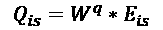
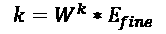
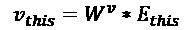
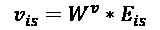
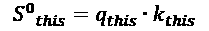
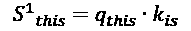
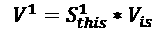
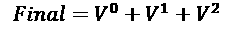

第九章:前路漫漫
机器学习领域正在迅速扩展，几乎每年都有新的发现。自然语言处理的机器学习领域也不例外，其发展非常迅速，机器学习模型在自然语言处理任务中的性能也在不断提高。
到目前为止，在本书中，我们已经讨论了许多机器学习方法，这些方法允许我们建立模型来执行NLP任务，如分类、翻译和通过聊天机器人近似对话。然而，正如我们到目前为止所看到的，我们的模型的性能相对于人类来说要差一些。即使使用我们到目前为止已经研究过的技术，包括具有注意力机制的序列到序列网络，我们也不太可能训练出一个匹配或超过真人的聊天机器人模型。然而，我们将在本章中看到，NLP领域的最新发展使我们离创建与人类无法区分的聊天机器人的目标更近了一步。
在这一章中，我们将探索NLP的几个最先进的机器学习模型，并检查一些导致卓越性能的特性。然后，我们将转而看看目前许多研究的焦点的其他几个NLP任务，以及如何使用机器学习技术来解决它们。
在本章中，我们将讨论以下主题:
- 探索最先进的自然语言处理机器学习
- 未来的NLP任务
- 语义角色标注
- 选区分析
- 文本蕴涵
- 机器理解
探索最先进的自然语言处理机器学习
虽然到目前为止，我们在本书中学习的技术对于从头训练我们自己的机器学习模型来说是非常有用的方法，但它们远不是全球正在开发的最复杂的模型。公司和研究小组一直在努力创建最先进的机器学习模型，这些模型将在许多NLP任务中实现最高的性能。
目前，有两种NLP模型具有最好的性能，可以被认为是最先进的:伯特和 GPT-2 。这两个模型都是通用语言模型的形式。我们将在接下来的章节中更详细地讨论这些。
伯特
BERT ，代表来自变形金刚的双向编码器表示，由谷歌于2018年开发，被广泛认为是NLP领域的领先模型，在自然语言推理和问答任务中取得了领先的性能。幸运的是，它已经作为开源模型发布，所以可以下载并用于自己的NLP任务。
BERT是作为预训练模型发布的，这意味着用户可以下载并实现BERT，而无需每次从头开始重新训练模型。预训练模型在几个语料库上进行训练，包括整个维基百科(由25亿个单词组成)和另一个图书语料库(包括另外8亿个单词)。然而，BERT使其区别于其他类似模型的主要因素是，它提供了一种深度、双向、无监督的语言表示，这种表示被证明提供了更复杂、更详细的表示，从而提高了NLP任务的性能。
嵌入
传统的嵌入层(如GLoVe)形成单词的单一表示，该表示不知道单词在句子中的含义，而双向BERT模型试图基于其上下文形成表示。例如，在这两个句子中，单词 bat 有两种不同的意思。
虽然单词 bat 在两个句子中都是名词，但我们可以辨别出这个单词的上下文和含义显然是非常不同的，取决于它周围的其他单词。一些单词也可能有不同的意思，这取决于它们在句子中是名词还是动词:
使用双向语言模型来形成依赖于上下文的单词表示，这是真正使BERT脱颖而出成为最先进的模型的原因。对于任何给定的标记，我们通过组合标记、位置和段嵌入来获得其输入表示:
图9.1–BERT架构
然而，理解模型如何达到这些初始的依赖于上下文的令牌嵌入是很重要的。
掩蔽语言建模
为了创建这种双向语言表示，BERT使用了两种不同的技术，第一种是屏蔽语言建模。这种方法有效地隐藏了输入句子中15%的单词，方法是用屏蔽标记替换它们。然后，该模型根据句子中其他单词的上下文，尝试预测被屏蔽单词的真实值。这种预测是双向的，以便在两个方向上捕捉句子的上下文:
输入 : 我们【MASK_1】隐藏了句子中的部分【MASK_2】
标签 : MASK_1 =随机，MASK_2 =单词
如果我们的模型能够学会预测正确的上下文相关的单词，那么我们就离上下文相关的表示又近了一步。
下一句预测
伯特用来学习语言表达的另一项技术是下一句预测。在这种方法中，我们的模型接收两个句子，并且我们的模型学习预测第二个句子是否是第一个句子之后的句子；例如:
句子A : “我喜欢喝咖啡”
B句 : “这是我最喜欢的饮料”
是下一句吗？ : 真
句子一 : “我喜欢喝咖啡”
句子B : 《天是蓝的》
是下一句吗？ : 假
通过像这样传递我们的句子模型对，它可以学习确定任何两个句子是否相关并相互跟随，或者它们是否只是两个随机的、不相关的句子。学习这些句子关系在语言模型中是有用的，因为许多NLP相关的任务，如问答，需要模型理解两个句子之间的关系。在下一句预测上训练模型允许该模型识别一对句子之间的某种关系，即使该关系是非常基本的。
使用两种方法(屏蔽语言建模和下一句预测)来训练BERT，并且两种技术的组合损失函数被最小化。通过使用两种不同的训练方法，我们的语言表达足够强大，并学习句子是如何形成和构造的，以及不同的句子如何相互联系。
伯特-建筑
模型架构建立在我们在前几章看到的许多原则之上，使用双向编码来提供复杂的语言表示。BERT有两种不同的变体，每种都由不同数量的层和注意力头组成:
- BERT Base : 12个变压器块(层)，12个注意头，~ 1.1亿个参数
- BERT Large : 24个变压器块(层)，16个注意头，~ 3.4亿个参数
虽然BERT Large只是具有更多参数的BERT Base的更深版本，但我们将重点关注BERT Base的架构。
通过遵循变压器的原理来构建BERT，现在将对其进行更详细的解释。
变形金刚(电影名)
模型架构建立在我们在本书中已经看到的许多原则之上。到目前为止，您应该熟悉编码器和解码器的概念，其中我们的模型学习编码器以形成输入句子的表示，然后学习解码器以将该表示解码为最终输出，无论这是分类还是翻译任务:
图9.2–变压器工作流程
然而，我们的转换器为这种方法增加了另一个复杂元素，其中转换器实际上有一个编码器堆栈和一个解码器堆栈，每个解码器接收最终编码器的输出作为其输入:
图9.3–多个编码器的变压器工作流程
在每个编码器层中，我们发现两个组成部分:自我关注层和前馈层。自我关注层是首先接收模型输入的层。这一层使编码器在对任何接收到的单词进行编码时检查输入句子中的其他单词，从而使编码能够感知上下文。自我关注层的输出向前传递到前馈层，前馈层独立地应用于每个位置。这可以用图解法说明如下:
图9.4-前馈层
我们的解码器层在结构上与编码器几乎相同，但是它们加入了一个额外的注意力层。这个注意力层帮助解码器关注编码表示的相关部分，类似于我们在序列到序列模型中看到的注意力工作方式:
图9.5–注意力方法
我们知道解码器从最终编码器获取输入，因此一个链接的编码器/解码器可能如下所示:
图9.6–链接的编码器/解码器阵列
这将为您提供一个有用的概述，介绍不同的编码器和解码器在更大的模型中是如何堆叠的。接下来，我们将更详细地检查各个部分。
编码器
变压器的独特属性是字单独流经编码器层，每个位置的每个字都有自己的路径。虽然在自我关注层中有一些依赖性，但是在前馈层中不存在。单个单词的向量从嵌入层获得，然后在通过前馈网络馈送之前通过自关注层馈送:
图9.7–编码器布局
自我关注可以说是编码器中最复杂的部分，所以我们将首先更详细地研究这一点。假设我们有一个三个单词的输入句子；比如“这样就好了”。对于这个句子中的每个单词，我们将它们表示为从我们的模型的嵌入层获得的单个单词向量。然后，我们从这个单词向量中提取三个向量:查询向量、键向量和值向量。这三个向量是通过将我们的单词向量乘以在训练模型时获得的三个不同的权重矩阵而获得的。
如果我们为输入句子中的每个单词调用单词嵌入， Ethis 、 Eis 和 Efine ，我们可以如下计算我们的查询、键和值向量:
查询向量:



关键向量:



价值向量:



既然我们知道了如何计算这些向量，那么理解它们各自代表什么就很重要了。本质上，每一个都是注意力机制中一个概念的抽象。一旦我们看到它们是如何计算的，这一点就变得很明显了。
让我们继续我们的工作示例。我们需要依次考虑输入句子中的每个单词。为此，我们计算句子中每对查询/关键向量的得分。这是通过获得输入句子中每个单词的每个查询/关键向量对的点积来实现的。例如，为了计算句子中第一个单词“this”的分数，我们计算“this”的查询向量和位置0的关键向量之间的点积。我们对输入句子中所有其他位置的关键向量重复这一过程，因此我们获得输入句子中第一个单词的 n 分数，其中 n 是句子的长度:
分数(“本”):



接下来，我们对这些分数中的每一个应用softmax函数，使得每个分数的值现在在0和1之间(因为这有助于防止爆炸梯度，并使梯度下降更有效和更容易计算)。然后，我们将每个得分乘以值向量，并将它们相加，以获得最终向量，然后在编码器中向前传递该向量:
最终向量("本"):



然后，我们对输入句子中的所有单词重复这一过程，以便我们获得每个单词的最终向量，其中包含自我关注的元素，然后该向量沿着编码器传递到前馈网络。这种自我关注的过程意味着我们的编码器知道在输入的句子中从哪里获取任务所需的信息。
在这个例子中，我们只学习了查询、键和值向量的单个权重矩阵。然而，我们实际上可以为这些元素中的每一个学习多个不同的矩阵，并将它们同时应用于我们的输入句子，以获得我们的最终输出。这就是所谓的多头注意力并允许我们执行更复杂的注意力计算，依靠多种不同的学习模式，而不仅仅是单一的注意力机制。
我们知道，BERT整合了12个注意力头，这意味着为 Wq 、 Wk 和 Wv 学习了12个不同的权重矩阵。
最后，我们需要一种方法让我们的编码器考虑输入序列中单词的顺序。目前，我们的模型独立处理输入序列中的每个单词，但在现实中，输入序列中单词的顺序将对句子的整体含义产生巨大的影响。为了说明这一点，我们使用位置编码。
为了应用这一点，我们的模型采用每个输入嵌入，并为每个单独添加一个位置编码向量。这些位置向量由我们的模型学习，遵循特定的模式来帮助它们确定每个单词在序列中的位置。理论上，将这些位置向量添加到我们的初始嵌入中，一旦它们被投影到单独的查询、键和值向量中，就应该转化为我们的最终向量之间的有意义的距离:
x0 =原始嵌入
t0 =位置编码
E0 =嵌入时间信号
x0 + t0 = E0
我们的模型为每个位置学习不同的位置编码向量( t 0， t 1，等等)，然后我们在这些甚至进入我们的编码器之前将它们应用于我们输入句子中的每个单词:
图9.8–向编码器添加输入
现在我们已经讨论了编码器的主要组件，是时候看看模型的另一面，看看解码器是如何构建的。
解码器
解码器中的组件与编码器中的组件非常相似。然而，我们的转换器中的解码器从编码器的输出接收输入，而不是像编码器那样接收原始输入语句。
我们的堆叠编码器处理我们的输入句子，留给我们一组注意力向量， K 和 V ，它们在我们的解码器的编码器-解码器注意力层中使用。这允许它只关注输入序列的相关部分:
图9.9–堆叠解码器
在每个时间步，我们的解码器使用句子中先前生成的单词和 K，V 注意力向量的组合来生成句子中的下一个单词。这个过程反复重复，直到解码器生成一个<结束>令牌，指示它已经完成生成最终输出。变压器解码器上的一个给定时间步长可能如下所示:
图9.10–变压器解码器
这里值得注意的是，解码器中的自我关注层的工作方式与编码器中的略有不同。在我们的解码器中，自我关注层只关注输出序列中较早的位置。这是通过将序列的任何未来位置设置为负无穷大来屏蔽它们来实现的。这意味着当分类发生时，softmax计算总是导致预测值为0。
编码器-解码器关注层的工作方式与我们编码器中的多头自我关注层相同。然而，主要的区别在于它从下面的层创建一个查询矩阵，并从编码器的输出中获取键和值矩阵。
这些编码器和解码器组成了我们的变换器，构成了BERT的基础。接下来，我们将看看BERT的一些应用，并研究一些在特定任务中表现出更高性能的变体。
伯特的应用
作为最先进的技术，BERT显然有许多实际应用。目前，它正被用于你可能日常使用的一些谷歌产品中；也就是说，Gmail中的建议回复和智能撰写(Gmail根据您当前键入的内容预测您期望的句子)和谷歌搜索引擎中的自动完成(您键入希望搜索的前几个字符，下拉列表将预测您将要搜索的内容)。
正如我们在前一章中看到的，聊天机器人是NLP深度学习可以用来做的最令人印象深刻的事情之一，BERT的使用确实导致了一些令人印象深刻的聊天机器人。事实上，问答是BERT擅长的主要事情之一，这在很大程度上是因为它是在大型知识库(维基百科)上训练的，并且能够以语法正确的方式回答问题(由于训练时考虑了下一句预测)。
我们仍然没有达到聊天机器人与真实人类的对话无法区分的阶段，BERT从其知识库中提取信息的能力极其有限。然而，BERT取得的一些结果是有希望的，考虑到NLP机器学习领域的发展速度，这表明这可能很快就会成为现实。
目前，由于训练方式的原因，BERT只能处理非常狭窄类型的NLP任务。然而，有许多BERT的变体已经以微妙的方式进行了改变，以在特定任务中实现更高的性能。这些包括但不限于以下内容:
- 罗伯塔:伯特的变体，由脸书建造。删除了BERT的下一句预测元素，但通过实现动态屏蔽增强了单词屏蔽策略。
- xlm / BERT :同样由脸书打造，这款模型对BERT应用了双语训练机制，使其能够学习不同语言中单词之间的关系。这使得BERT可以有效地用于机器翻译任务，表现出比基本序列到序列模型更好的性能。
- distil BERT:BERT的更紧凑版本，保留了原始版本的95%，但学习参数的数量减半，减少了模型的总大小和训练时间。
- ALBERT :这个Google 训练过的模型使用了自己独特的训练方法，叫做句序预测。这种变化的BERT已经被证明在许多任务上优于标准的BERT，现在被认为是领先于BERT的最新技术(说明了事物变化的速度有多快！).
虽然BERT可能是最著名的，但也有其他基于变压器的模型被认为是最先进的。通常被认为是BERT的竞争对手的主要模型是GPT-2。
GPT-2
GPT-2虽然与伯特相似，但在一些微妙的方面有所不同。虽然这两种模型都基于前面概述的变压器架构，但伯特使用一种被称为自我关注的关注形式，而GPT-2使用掩蔽自我关注。两者之间的另一个微妙区别是，GPT-2的构造方式是一次只能输出一个令牌。
这是因为新GPT协议本质上是自回归的。这意味着当它生成一个输出(句子中的第一个单词)时，这个输出被递归地添加到输入中。然后，该输入被用于预测句子中的下一个单词，并被重复，直到生成完整的句子。您可以在以下示例中看到这一点:
第一步:
输入 : 天空是什么颜色？
输出 : 该...
然后，我们将预测的输出添加到输入的末尾，并重复此步骤:
第二步:
输入 : 天空是什么颜色？
输出 : 天空
我们重复这个过程，直到生成完整的句子:
第三步:
输入 : 天空是什么颜色？天空
输出 : 为
第四步:
输入 : 天空是什么颜色？天空是
输出 : 蓝色
这是BERT和GPT-2在性能方面的关键权衡之一。BERT 被双向训练的事实意味着这种单令牌生成是不可能的；然而，GPT-2不是双向的，所以它在进行预测时只考虑句子中以前的单词，这就是为什么BERT在预测句子中缺失的单词时优于GPT-2。
比较自我注意和被掩盖的自我注意
这种差异在两种不同型号实现注意力的方式上也很明显。由于BERT是双向的，它的注意机制能够考虑整个输入句子的上下文并确定在输入句子中的确切位置:
图9.11-自我关注机制
另一方面,GPT-2不是双向的，因此被屏蔽的自我关注机制只能查看它已经看到的令牌，而不能“预测”:
图9.12-被掩盖的自我注意机制
新GPT协议-伦理
GPT-2的一个非常有趣的考虑是作者在考虑是否向公众发布该模型时对伦理的考虑。
GPT-2的语言生成能力意味着它能够使用很少的提示生成非常真实和语法正确的句子。通过向它提供几行输入来识别一个主题，该模型能够生成关于该主题的详细信息段落，而不管它实际上是真是假！一个现在已经臭名昭著的例子是“独角兽”故事，其中模型接收到一个句子输入:
输入 : “在一个令人震惊的发现中，科学家们发现了一群独角兽，它们生活在安第斯山脉一个遥远的、以前从未探索过的山谷中。更令研究人员惊讶的是，独角兽能说一口流利的英语。”
该模型的输出如下:
输出 : 科学家根据他们独特的角给这个种群命名，奥维德的独角兽。这些四角银白色的独角兽此前是科学未知的。
现在，在将近两个世纪之后，引发这一奇怪现象的谜团终于解开了。
拉巴斯大学的进化生物学家Jorge Pérez博士和几个同伴在探索安第斯山脉时，发现了一个小山谷，没有其他动物或人类。佩雷斯注意到山谷里有一个看起来像是天然喷泉的东西，被两座岩石和银色积雪的山峰环绕着。
这只是一个更大的九段响应中的前三段，该模型从很少的输入中生成。值得注意的是句子都很有意义(不考虑不可能的题材！)，段落按照逻辑顺序排列在一起，模型能够从很小的输入中生成所有这些内容。
虽然这在性能和构建深度NLP模型的可能性方面令人印象深刻，但它确实引起了一些关于此类模型的道德问题以及它们如何被使用(和滥用！).
随着“假新闻”的兴起和利用互联网传播错误信息，像这样的例子说明了使用这些模型生成真实文本是多么简单。让我们考虑一个例子，一个代理人希望在网上制造一些主题的假新闻。现在，他们甚至不需要自己写假信息。理论上，在互联网上传播这些虚假信息之前，他们可以训练NLP模型来为他们做这件事。新GPT协议的作者在培训和向公众发布模型时特别关注这一点，指出该模型有可能被滥用和误用，因此，只有在他们没有看到滥用较小模型的证据时，才会向公众发布较大、更复杂的模型。
这可能会成为NLP深度学习向前发展的一个关键焦点。随着我们接近聊天机器人和文本生成器，如GPT-2，可以接近人类的复杂程度，这些模型的使用和误用需要得到充分理解。研究表明，GPT-2生成的文本被认为几乎与来自《纽约时报》的真实人类撰写的文章一样可信(72%)。随着我们在未来继续开发更复杂的深度NLP模型，随着模型生成的文本变得越来越真实，这些数字可能会收敛。
此外，GPT新协议的作者还证明了该模型可以针对误用进行微调。通过在意识形态极端立场上微调GPT-2并生成文本，表明可以生成支持这些意识形态的宣传文本。虽然也表明可以训练反模型来检测这些模型生成的文本，但随着这些模型变得更加复杂，我们将来可能会再次面临进一步的问题。
随着时间的推移，NLP模型变得越来越复杂，性能越来越好，这些伦理考虑值得牢记。虽然您为自己的目的而训练的模型可能不是为了任何误用，但它们总有可能被用于非预期的目的。始终考虑您使用的任何模型的潜在应用。
未来的NLP任务
虽然这本书的大部分内容都集中在文本分类和序列生成上，但是还有许多其他的NLP任务我们还没有真正涉及到。虽然其中许多从学术角度来看比从实践角度来看更有趣，但理解这些任务很重要，因为它们构成了语言如何构建和形成的基础。作为NLP数据科学家，我们为更好地理解自然语言的形成所做的任何事情都只会提高我们对主题的理解。在本节中，我们将更详细地讨论NLP未来发展的四个关键领域:
- 选区分析
- 语义角色标注
- 文本蕴涵
- 机器理解
选区解析
成分分析(也称为句法分析)是识别句子的各个部分并为其分配句法结构的行为。这种句法结构在很大程度上是由上下文无关语法的使用决定的，这意味着使用句法分析，我们可以识别给定句子的底层语法结构并将其映射出来。任何句子都可以分解成一个“解析树”，它是这个底层句子结构的图形表示，而句法解析是检测这个底层结构并确定如何构建这个树的方法。
我们将从讨论这个潜在的语法结构开始。句子中“选区”的概念有点抽象，但基本假设是，一个句子由多个单词“组”组成，每个单词都是一个选区。语法的基本形式可以说是一个句子中所有可能出现的成分类型的索引。
让我们首先考虑最基本的成分类型，名词短语。句子中的名词很容易识别，因为它们是定义对象或实体的词。在下面的句子中，我们可以识别三个名词:
然而，名词短语略有不同，因为每个名词短语都应该指代一个实体。在前面的句子中，尽管杰夫和厨师都是名词，短语杰夫厨师指的是一个人，所以这可以被认为是一个名词短语。但是我们如何从句法上确定名词短语指的是一个单一的实体呢？一个简单的方法是把短语放在动词前面，看看这个句子是否有句法意义。如果是的话，那么这个短语很可能是一个名词短语:
我们能够识别各种不同的短语，还有一些复杂的语法规则来帮助我们识别它们。我们首先确定每个句子可以分解成的独立语法特征:
现在我们知道了句子是由成分组成的，成分可以由几个单独的语法组成，我们现在可以开始根据它们的结构来设计句子。例如，以下面的例句为例:
我们可以从把这个句子分成两部分开始:一个名词短语和一个动词短语:
图9.13-将句子分解成语法成分
然后，我们对每个短语重复这个过程，将它们分成甚至更小的语法成分。我们可以把这个名词短语分成限定词和名词:
图9.14-分解名词短语
同样，我们对动词短语也这样做，将它分解成一个动词和另一个名词短语:
图9.15-分解动词短语
我们可以一次又一次地重复，将句子的各个部分分解成越来越小的块，直到我们剩下一棵解析树。这个解析树传达了我们句子的整个句法结构。我们可以在这里完整地看到我们示例的解析树:
a
图9.16-句子的解析树
虽然这些解析树允许我们看到我们的句子的句法结构，但它们远非完美。从这个结构中，我们可以清楚地看到，有两个名词短语带有一个动词发生。然而，从前面的结构来看，并不清楚实际发生了什么。我们在两个对象之间有一个动作，但是仅仅从语法上并不清楚发生了什么。哪一方在对谁采取行动？我们将会看到语义角色标签捕捉到了这种模糊性。
语义角色标注
语义角色标注是将标签分配给句子中的单词或短语的过程，以指示它们在句子中的语义角色。从广义上讲，这涉及到识别句子的谓语，并确定句子中的每个其他术语如何与这个谓语相关联。换句话说，对于一个给定的句子，语义角色标注决定了“谁在何时何地对谁做了什么？”
因此，对于一个给定的句子，我们通常可以将句子分解成它的组成部分，就像这样:
图9.17将一个句子分解成几个组成部分
一个句子的这些部分有特定的语义角色。任何给定句子的谓词代表句子中发生的事件，而句子的所有其他部分都与给定谓词相关联。在这个句子中，我们可以将我们的“谁”标记为谓语的施事。代理是导致事件的东西。我们也可以把我们的“Whom”作为谓语的主题。主题是我们句子中受问题事件影响最大的成分:
图9.18–分解角色
理论上，句子中的每个单词或短语都可以用其特定的语义成分来标记。这方面的一个几乎全面的表格如下:
通过执行语义角色标注，我们可以为句子的每个部分分配特定的角色。这在NLP中非常有用，因为它允许模型更好地“理解”一个句子，因此而不是一个句子仅仅是各种角色的组合，它被理解为一个语义角色的组合，更好地传达句子所描述的事件中实际发生的事情。
当我们读到“男孩踢球”这句话的时候，我们天生就知道有一个男孩，有一个球，那个男孩在踢球。然而，到目前为止我们看到的所有NLP模型都是通过查看句子中的单个单词并创建它们的某种表示来理解这句话的。到目前为止，我们所看到的系统不太可能理解这样一个事实，即有两个“东西”，并且第一个物体(男孩)正在对第二个物体(球)执行一些动作(踢)。在我们的模型中引入语义角色的元素，可以通过定义句子的主题和它们之间的交互，更好地帮助我们的系统形成更真实的句子表示。
语义角色标注有助于识别表达相同意思但语法或句法不相同的句子；例如，如下所示:
这些句子基本上有相同的意思，尽管它们显然不包含相同顺序的所有相同的单词。通过对这些句子进行语义角色标注，我们可以确定谓语/施事/主位都是相同的。
我们之前已经看到了如何使用成分分析/句法分析来识别句子的句法结构。在这里，我们可以看到如何将简单的句子“我买了一只猫”分解成它的组成部分——代词、动词、行列式和名词:

图9.19-选区分析
然而，这并没有揭示句子的每一部分所扮演的语义角色。是猫被我买了还是我被猫买了？虽然句法角色对于理解句子的结构是有用的，但它并不能揭示语义。一个有用的类比是图像字幕。在一个被训练用来标记图像的模型中，我们希望得到一个描述图像内容的标题。语义标注与此相反，我们拿一个句子，试图抽象出句子中正在发生的动作的心理“图像”。
但是在NLP中语义角色标注对什么语境有用呢？简而言之，任何需要“理解”文本内容的NLP任务都可以通过添加角色来增强。这可以是文档摘要、问答或句子翻译。例如，使用语义角色标记来识别我们的句子的谓词和相关的语义组件，我们可以训练一个模型来识别为句子提供重要信息的组件，并丢弃那些不提供重要信息的组件。
因此，能够训练模型来执行准确和有效的语义角色标记将对NLP的其余部分有有用的应用。最早的语义角色标注系统是纯粹基于规则的，由从语法派生的基本规则集组成。在深度学习的最新发展之前，这些方法已经发展到包含统计建模方法，这意味着有可能训练分类器来识别句子中的相关语义角色。
与任何分类任务一样，这是一个监督学习问题，需要一个完全标注的句子，以便训练一个模型，该模型将识别以前看不见的句子的语义角色。然而，这种带注释的句子非常稀少。我们在本章前面看到的庞大的语言模型，如BERT，是在原始句子上训练的，不需要带标签的例子。然而，在语义角色标记的情况下，我们的模型需要使用正确标记的句子才能执行这项任务。虽然数据集确实存在，但它们不够大，不够灵活，不足以训练一个全面、准确的模型，在各种句子上表现良好。
正如你可能想象的那样，解决语义角色标注任务的最新方法都是基于神经网络的。初始模型使用LSTMs和双向LSTMs结合手套嵌入来对句子进行分类。这些模型中还包含了卷积层，也表现出了良好的性能。
然而，了解到这些最先进的模型都是基于BERT的也就不足为奇了。使用BERT已经在各种NLP相关的任务中表现出了出色的性能，语义角色标注也不例外。结合了BERT的模型已经被整体地训练来预测词性标签，执行句法分析，并且同时执行语义角色标注，并且已经显示出良好的结果。
其他研究也表明，图卷积网络在语义标记方面是有效的。图由节点和边构成，其中图中的节点表示语义成分，边表示父部件和子部件之间的关系。
还提供了许多用于语义角色标记的开源模型。谷歌的SLING解析器被训练来执行数据的语义注释。该模型使用双向LSTM对句子进行编码，使用基于转换的递归单元进行解码。该模型简单地将文本标记作为输入和输出角色，而没有任何进一步的符号表示:
图9.20–双向LSTM(吊索)
值得注意的是，SLING仍然是一项正在进行中的工作。目前，从任意文本中准确提取事实还不够复杂。这表明，在创建一个真正准确的语义角色解析器之前，该领域还有许多工作要做。完成后，语义角色解析器可以很容易地用作整体机器学习模型的一部分，以标记句子中的语义角色，然后在更广泛的机器学习模型中使用，以增强模型对文本的“理解”。
文本蕴涵
文本蕴涵是另一种方法，通过它我们可以训练模型，试图更好地理解句子的意思。在文本蕴涵中，我们试图确定两段文本之间的方向关系。每当一段文字的真理从另一段文字而来时，这种关系就存在。这意味着，给定两个文本，如果第二个文本可以被第一个文本中的信息认为是真实的，我们可以说这两个文本之间存在正向关系。
这项任务通常以下列方式设置，第一个文本标记为文本，第二个文本标记为假设:
正文 : 如果你把钱捐给慈善机构，你就会快乐
假设 : 捐钱给慈善机构有好的结果
这是正面文本蕴涵的示例。如果假设来自文本，那么可以说两个文本之间存在方向关系。用文本/假设设置示例很重要，因为这定义了关系的方向。大多数时候，这种关系是不对称的。例如，在本例中，第一句包含第二句(我们可以根据第一句中的信息推断第二句为真)。然而，我们不能根据第二句中的信息推断第一句是真的。虽然这两种说法都有可能确实是对的，但如果我们不能推断出两者之间存在方向关系，我们就不能从一个推断出另一个。
还有存在一个否定的文本蕴涵。这是陈述相互矛盾的时候；例如，如下所示:
正文 : 如果你把钱捐给慈善机构，你就会快乐
假设 : 捐钱给慈善机构有不良后果
在这个例子中，文本不需要假设；相反，文本与假设相矛盾。最后，如果两个句子之间没有关系，也可以确定它们之间没有文本蕴涵。这意味着这两种说法不一定是矛盾的，而是文本不需要假设:
正文 : 如果你把钱捐给慈善机构，你就会快乐
假设 : 给慈善机构捐钱会让你放松
从NLP的角度来看，自然语言的模糊性使得这成为一项有趣的任务。两个句子可以有不同的句法结构，不同的语义结构，由完全不同的单词组成，但仍然有非常相似的意思。类似地，两个句子可以由相同的词和实体组成，但具有非常不同的含义。
这就是使用模型来量化文本意义特别有用的地方。文本蕴涵也是一个独特的问题，因为两个句子可能没有完全相同的意思，但是一个仍然可以从另一个推断出来。这需要一种语言推理的元素，而这种元素在大多数语言模型中是不存在的。通过在我们未来的模型中加入语言演绎的元素，我们可以更好地捕捉文本的含义，并能够确定两个文本是否包含相同的信息，而不管它们的表示是否相似。
幸运的是，简单的文本蕴涵模型并不难创建，基于LSTM的模型已经被证明是有效的。一个可能证明有效的设置是一个暹罗LSTM网络。
我们把我们的模型建立为一个多类分类问题，其中两个文本可以是正的或负的蕴涵或者没有蕴涵。我们将两个文本输入到一个双输入模型中，从而获得两个文本的嵌入，并通过双向LSTM层传递它们。然后，这两个输出在通过最终的LSTM层之前进行某种方式的比较(使用一些张量运算)。最后，我们使用softmax层对输出进行分类:
图9.21–暹罗LSTM网络
虽然这些模型远非完美，但它们代表了创建完全准确的文本蕴涵模型的第一步，并为将其集成到未来的语言模型中开辟了可能性。
机器理解
到目前为止，在这本书里，我们主要提到了NLP，但是能够处理语言只是其中的一部分。当你或我阅读一个句子时，我们不仅阅读、观察和处理单个单词，而且我们还建立了对句子实际意思的固有理解。可以说，NLP的下一步是训练模型，使其不仅能够理解句子，还能理解句子中表达的思想。这个领域的真正定义非常松散，但它通常被称为机器理解或自然语言理解 ( NLU )。
在学校，我们从小就被教导阅读理解。你可能在很久以前就学会了这种技能，并且现在认为这是理所当然的。通常，你可能甚至没有意识到你正在做这件事；事实上，你现在就在做！阅读理解就是阅读一篇文章，理解这篇文章，并能够回答关于这篇文章的问题。例如，看看下面的文字:
鉴于你已经理解了这篇文章，你现在应该能够回答以下关于这篇文章的问题:
问 : 水的沸点是多少？
A : 100摄氏度(212华氏度)
问 : 开水对其口感有影响吗？
答 : 否
这种理解文本并回答相关问题的能力构成了我们机器理解任务的基础。我们希望能够训练一个机器学习模型，它不仅能够形成对文本的理解，而且能够用语法正确的自然语言回答关于它的问题。
这样做的好处很多，但一个非常直观的用例是构建一个充当知识库的系统。目前，搜索引擎的工作方式是，我们运行一个搜索(在谷歌或类似的搜索引擎中)，搜索引擎返回一组文档。然而，为了找到特定的信息，我们仍然必须从返回的文档中推断出正确的信息。整个过程可能看起来像这样:
图9.22-查找信息的过程
在这个例子中，要回答问题“水的沸点是多少？”，我们首先公式化我们的问题。然后，我们在搜索引擎上搜索主题。这可能是问题的某种简化表示；比如《水沸点》。然后，我们的搜索引擎会返回一些相关的文档，很可能是维基百科中关于水的条目，我们必须手动搜索这些文档，并使用它来推断我们问题的答案。虽然这种方法是有效的，但机器理解模型将允许这一过程得到某种程度的简化。
假设我们有一个完美的模型，能够完全理解和回答文本语料库上的问题。我们可以在大量数据源上训练这个模型，比如互联网或维基百科的大量文本，并形成一个充当大型知识库的模型。通过这样做，我们将能够用真正的问题查询知识库，答案将自动返回。这移除了我们图中的知识推理步骤，因为推理由模型负责，因为模型已经理解了主题:

图9.23–使用模型的新流程
在理想的世界中，这就像输入“水的沸点是多少？”进入搜索引擎，接收【100°C(212°F)】返回的答案。
让我们假设我们有一个这个模型的简化版本。假设我们已经知道问题的答案出现在哪个文档中。那么，给定维基百科关于水的页面，我们能训练一个模型来回答问题“水的沸点是多少？”。首先，一个简单的方法是简单地返回包含我们问题答案的维基百科页面的段落，而不是合并完整语言模型的元素。
图9.24-模型的架构
我们的模型将我们希望得到答案的问题和包含我们的问题的文档作为输入。然后，这些图像经过嵌入层，形成每个图像的基于张量的表示，然后经过编码层，形成进一步简化的矢量表示。
既然我们的问题和文档被表示为向量，我们的匹配层试图确定我们应该在文档向量中的什么地方寻找问题的答案。这是通过某种形式的注意力机制来实现的，通过这种机制，我们的问题决定了我们应该查看文档向量的哪些部分来回答问题。
最后，我们的融合层被设计成捕获我们的匹配层的长期依赖性，组合从我们的匹配层接收的所有信息，并执行解码步骤以获得我们的最终答案。该层采用双向RNN的形式，将我们的匹配层输出解码为最终预测。我们在这里预测两个值——一个起点和一个终点——使用多类分类。这代表了我们文档中的起点和终点，包含了我们最初问题的答案。如果我们的文档包含100个单词，单词40和单词50之间的句子包含我们问题的答案，我们的模型将理想地预测起点和终点的值为40和50。这些值可以很容易地用于从输入文档中返回相关的段落。
虽然返回目标文档的相关区域是一个有用的训练模型，但它不同于真正的机器理解模型。为了做到这一点，我们必须整合一个更大的语言模型的元素。
在任何机器理解任务中，实际上都有三个因素在起作用。我们已经知道有一个问题和答案，但也有一个相关的背景，可能会决定一个给定问题的答案。例如，我们可以问以下问题:
今天星期几？
答案可能会有所不同，这取决于提出问题的背景；例如，星期一，星期二，三月六日，圣诞节。
我们还必须注意到，问题和答案之间的关系是双向的。当给定一个知识库时，我们有可能给定一个问题生成一个答案，但是同样可以得出结论，我们能够给定一个答案生成一个问题:
图9.25-问题和答案之间的关系
一个真正的机器理解或许可以进行问题生成 ( QG )，以及问答 ( QA )。最明显的解决方案是训练两个独立的模型，每个任务一个，并比较它们的结果。理论上，我们的QG模型的输出应该等于我们的QA模型的输入，因此通过比较两者，我们可以提供同时评估:

图9.26-QG模型和质量保证模型之间的比较
然而，更全面的模型将能够同时执行这两项任务，从而从答案生成问题并回答问题，就像人类能够做的那样:
图9.27–双模型表示
事实上，NLU最近的进步意味着这种T1模式已经成为现实。通过组合许多元素，我们能够创建一个能够执行双重模型功能的神经网络结构，正如前面的所示。这就是所谓的双向问答网络。事实上，我们的模型包含了迄今为止我们在本书中看到的神经网络的大部分组件，即嵌入层、卷积层、编码器、解码器和注意力层。问答网络的完整架构如下所示:
图9.28-问答网络的架构
- 模型的输入是问题、答案和上下文，如前所述，但是问题和答案也向右移动了。
- 我们的嵌入层对字符和单词的手套嵌入向量进行卷积，以创建一个组合表示。
- 我们的编码器由LSTMs组成，非常实用。
- 我们的输出也是基于RNN的，并且一次解码一个单词来生成最终的问题和答案。
当预先训练的问答网络存在时，你可以练习运用你新获得的PyTorch技能，并尝试自己建立和训练一个这样的模型。
像这样的语言理解模型很可能是未来几年NLP研究的主要焦点之一，并且新的论文很可能会以很高的频率发表。
摘要
在这一章中，我们首先考察了几种最新的自然语言处理语言模型。尤其是BERT，似乎已经被广泛接受为行业标准的最先进的语言模型，BERT及其变体被企业广泛用于他们自己的NLP应用程序中。
接下来，我们研究了机器学习向前发展的几个重点领域；即语义角色标注、选区分析、文本蕴涵和机器理解。这些领域很可能会在NLP正在进行的研究中占很大比例。
现在，当谈到NLP深度学习模型以及如何在PyTorch中实现它们时，您已经有了全面的能力和理解，也许您会倾向于成为这项研究的一部分。无论这是在学术还是商业环境中，您现在都有希望知道如何从头开始创建自己的深度NLP项目，并可以使用PyTorch创建解决任何NLP任务所需的模型。通过不断提高自己的技能，了解并跟上该领域的所有最新发展，你一定会成为一名成功的、行业领先的NLP数据科学家！